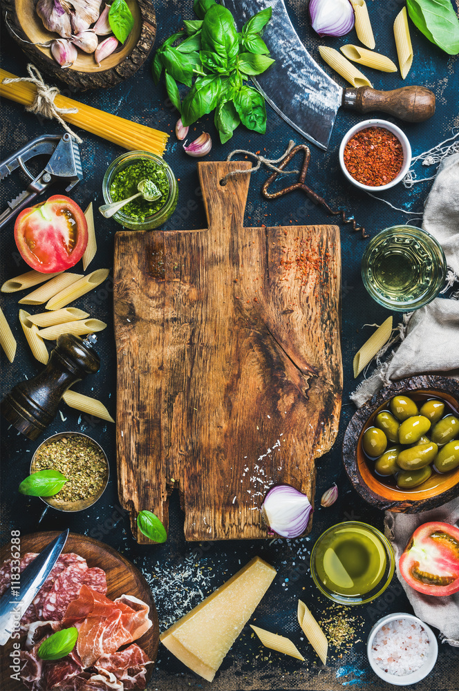

With over 25 years of culinary history, La nostr famiglia continues to challenge creative boundaries in the spirit of celebrating Italian and its distinct provinces. Connecting people to place through contemporary Italian cuisine; La nostr famiglia crafts-inspired dishes reflect our country’s diverse landscape, history and culture. Our chef work closely with farmers and suppliers to source the finest ingredients from across the nation.